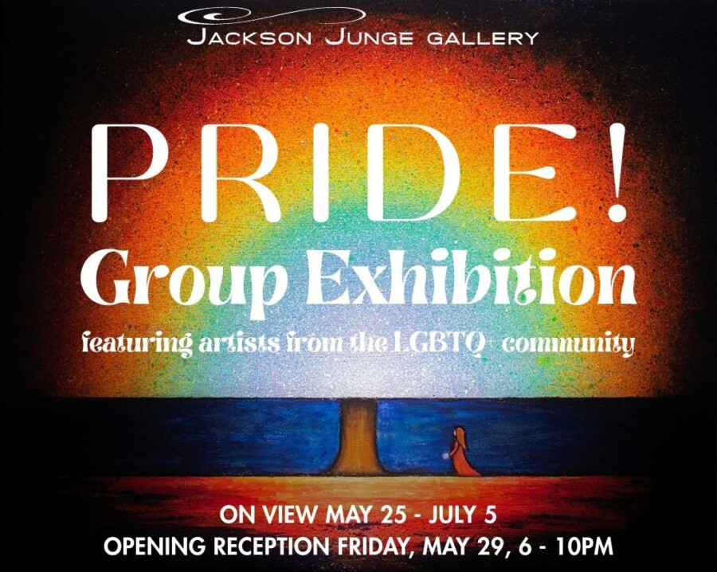

PRIDE! Exhibition
Jackson Junge Gallery is thrilled to present their second group exhibition of the year, PRIDE! which will feature artists from the LGBTQ+ community. By giving queer and non-binary creators a platform to share their experiences through art, the gallery hopes to foster an inclusive space for marginalized voices. PRIDE! is a form of activism, also raising awareness of LGBTQ+ issues and advocating for equality and social change. Explore identity and challenge traditional notions of gender and sexuality with PRIDE!
Each artist shows incredible vulnerability in sharing their work and their story in PRIDE! Rowane Sylvester opens up with his painting “Self Made Man”, a sensitive portrait of someone stitching their own chest, which serves as a visual representation of Sylvester’s transition. He shares that “prior to this piece, my practice centered on loss of family and the disorientation of self that accompanied my coming out. With this work, however, I arrived at a turning point. It marks a reclamation—a moment where I no longer mourn what was fractured, but instead celebrate the self I have forged.” Many pieces in PRIDE! were inspired by the artist’s complex journeys of self-discovery. Neelie Hespen speaks towards her “complicated experience of wanting to be seen, while not always being fully understood as a member of the queer community” with her work “In a Pickle Wearing Sensible Shoes Playing for the Other Team.” Colored pencils sketch out a quirky, wide-eyed girl standing encased in a pickle, dressed in sensible/comfortable shoes in her softball jersey reading “Other Team.” Using familiar stereotypes as visual cues, the piece leans into humor to explore the tension of being “in a pickle” about one’s queerness.
A nonbinary femme lesbian, Harper Bolick stitched together visual representations of their queerness and the idols who have guided and informed their own gender presentation into a lesbian-flag-inspired quilt “Femme-ininity.” Bolick muses on the piece, saying “typically passed down through a family, a quilt is a token of love and remembrance. I draw upon that symbolism, cultivating my own lesbian family with figures familiar and distant to me. A love for lesbianism is embodied in every stitch of this quilt.” Also created from a longing for community, Logan Basil pieces historically important queer photographs into a rainbow spectrum in their digital collage, “A Visual History of Sex and Magic.” Basil opens up that “as a young queer person who doesn’t have queer elders in my life, I look towards our history for reassurance and community. The lives and tribulations of historical figures assure me that I am not alone in my experiences…Looking back at our history contextualizes the progress we have made and the progress that still must be done.” Basil is not the only artist looking to the past. In-house artist Autumn Justine Miller’s whimsically gothic painting “Lovers” imagines Victorian era sapphic passion. Miller was inspired by the idea of “going against the cultural expectations of proper women of the time.”
Pride is also about celebration! Alexander Martin’s “Embrace, Recharge, Realign (A Respit for Sprites Before Returning to Their Sacred Duty)” is from her current body of work using myth and lore as lens through which highlight, celebrate, and communicate Black and queer culture, history, and legacy. This piece shows queer intimacy, a quiet moment of care, sharing its importance for survival in navigating the world. Alice Bortel’s joyful photograph “Jumpdafuckup” is a self-portrait of the artist leaping off her bed while shredding a guitar. Bortel says that “as a trans woman, I’ve learned to be more than okay with who I am, that’s kind of half of the point right? My goal with this photograph was to capture a moment of me expressing my personality surrounded by pieces of art that make me, me! This life is far too short to not be your truest self, whether you’re queer identifying or not. It’s better to get busy living sooner rather than later, and I’m loving every second of it.” Owen Geno Mastroianni’s subtly sexual painting “We Were Just Wresting!” is a hot-pink stretched and abstracted depiction of a pair of men wrestling. Inspired by an Instagram account that purposefully draws in viewers because of its gay content, which along with the glammed hunting camo background, nods to cruising online and in public spaces. The painting becomes a celebration of the bold, fearless, audacious actions Mastroianni witnesses working as a bartender in Boystown.
As both a celebration and a call to action, PRIDE! honors the resilience, creativity, and courage of LGBTQ+ artists who continue to shape culture through their work. From deeply personal reflections on identity to joyful expressions of queer community and connection, this exhibition highlights the many ways art can affirm, challenge, and inspire. Jackson Junge Gallery invites viewers to engage with these powerful stories and join in recognizing the beauty, complexity, and strength of living authentically.
PRIDE! will be on view at Jackson Junge Gallery May 25th – July 5th, 2026. The gallery will be holding the exhibition’s opening reception on Friday, May 29th, from 6 pm – 10 pm. It is free and open to the public. PRIDE! is curated by Owner Chris Jackson, Gallery Director Kaitlyn Miller and Assistant Gallery Director Kristen Arcus.
Alexander Martin, Alexi Vander Vinne, Alice Bortel, Autumn Justine Miller, Chris Chapa, Curtis Kimberlin, Esther Ajayi, Harper Bolick, Jacob Grant, Jonathan Antos, Katie Cowden, Logan Basil, Margaret Halkin, Michael Winchester, Neelie Hespen, Owen Geno Mastroianni, Paola Seeley, Paul Gravett, Richard Sperry, Rowane Sylvester, Mook, Tatum Kriha, Yuliya Klochan